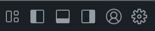

Visual Studio Code セットアップ¶
Visual Studio Code (VS Code) は Microsoft が提供する軽量な開発用エディタです。
このガイドはWindowsとmacOSにVS Codeをインストールし、Python開発・実行に推奨される拡張機能を設定する方法を説明します。
この時点で、Python (or conda) のインストールが完了している必要はありません。
1-1. Windowsにインストール¶
- 公式Visual Studio CodeサイトからWindowsインストーラーをダウンロードします。
- Windows 10/11用の一番大きいアイコンをクリック
- インストーラーを実行し、指示に従ってインストールを完了させます。
- 基本的に、設定はデフォルトのままで問題ありません。
- "accept agreement" だけは、チェックをしっかり入れないと進めません。
- インストールが完了したら、スタートメニューから VS Code を起動します。
生成AI（GitHub Copilot）の案内が表示される場合がありますが、本セミナーの手順ではサインインは不要です。
- 設定を同期したい場合は、プロンプトに従ってMicrosoftまたはGitHubアカウントにサインインしてください。
1-2. macOSにインストール¶
このセクションでは、macOS でアプリを展開して起動する基本手順を説明します。
- Visual Studio CodeのサイトからmacOS版をダウンロードします。
- Mac用の一番大きいアイコンをクリック
- ダウンロードした
.zipファイルを開き、Visual Studio Code.app をApplicationsフォルダへドラッグします。 - LaunchpadまたはApplicationsフォルダから Visual Studio Code を起動します。
2. VS Code の使い方概略¶
VS Codeの画面は、標準設定だと、以下のような見た目です。
 画像の出典：https://github.com/microsoft/vscode
画像の出典：https://github.com/microsoft/vscode
左は「エクスプローラー」で、ファイルを選択したり、フォルダを開いたりします。各種拡張機能も、操作が必要なものは、ここで行います。
真ん中の上は「エディタ」で、コードを編集します。
真ん中の下は「ターミナル」で、コマンドを実行します（初期画面だと隠れている）。
右は「GitHub Copilot」のチャット画面が隠れています。
おおよそのこのルールだけ覚えておくと、VS Code右上にある以下のアイコンを活用して、柔軟にVS Codeの見た目を変えられます。

3. VS Code 拡張機能とは¶
拡張機能（extension）は、VS Code に後から機能を追加できるプラグインです。
必要なプログラミング言語サポートやデバッグツールなどをインストールして、自分好みにカスタマイズできます。
4. Python と Jupyter 拡張機能のインストール¶
- Visual Studio Codeで、左サイドバーにある四角形アイコンをクリックする
- Python を検索し、Microsoftが提供する拡張機能をインストールします。
- Microsoft 社が提供しており、安心です
- 同様に Jupyter を検索し、Microsoftが提供する拡張機能をインストールします。
- こちらも Microsoft 社が提供しており、安心です
- ウィンドウ再読み込みを提案されたら、対応して拡張機能を有効化します。
Python拡張機能の主な機能¶
Python拡張機能を有効にすると、コード補完や IntelliSense、Linting によるコード解析、デバッグ、単体テスト実行など多くの機能が利用できます。また仮想環境や Conda 環境の切り替えも簡単に行え、Jupyter Notebook の作成・実行も VS Code 内で完結できます。
また、Python拡張機能にはエディタで開いているコードを直接ターミナルで実行する機能があります。
例えば、複数行を選択した状態でShift+Enterを押すと、選択したコードがターミナルへ送信されます。
コードブロックの途中に改行があっても、インデントを基準にブロックの切れ目を自動で判断して実行します。